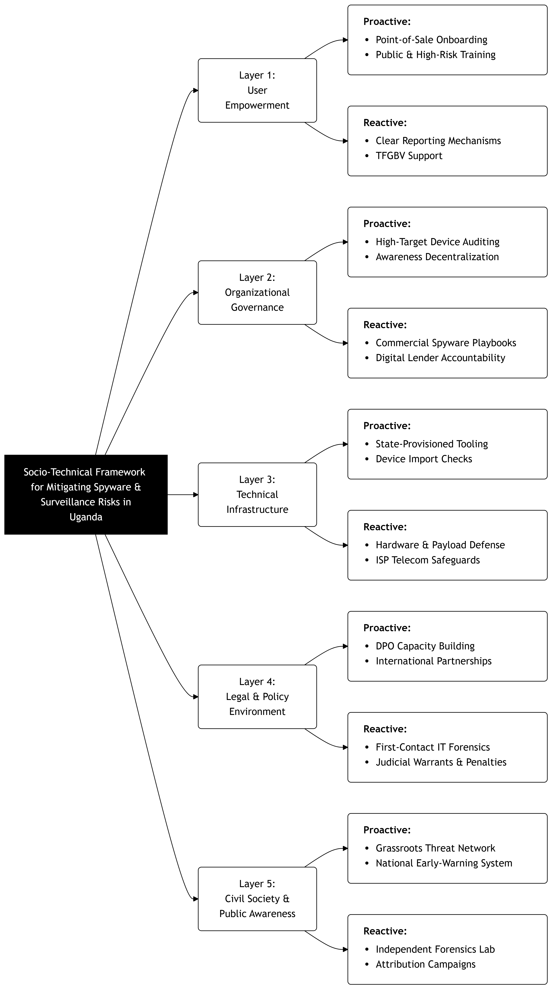

Global Surveillance Supply Chain Map ⓘ
● Live API: SurveillanceWatch.io Targeted Country (Uganda)
Vendor Headquarters
Verified Supply Connection
Socio-Technical Mitigation Framework
Visual Architecture

Framework Mitigation Matrix
| Framework Layer | Proactive Controls (Prevention) | Reactive Controls (Response) |
|---|---|---|
| 1. User Empowerment |
|
|
| 2. Organizational Governance |
|
|
| 3. Technical Infrastructure |
|
|
| 4. Legal & Policy Environment |
|
|
| 5. Civil Society & Public Awareness |
|
|